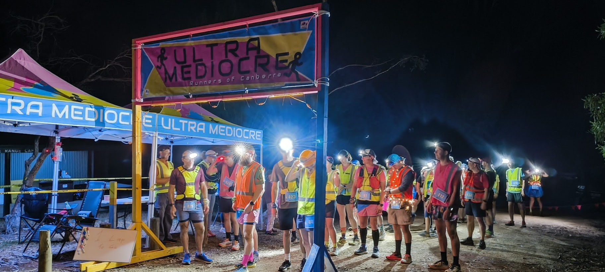

Age restrictions
Athletes must be at least 18 years of age on race day. This restriction arises from our event insurance and first aid arrangements. No ifs, no buts.
Entry Discounts
UMRoC members receive a 10% discount on all entry types.
Waitlist
If races sell out there will be a waitlist and places will be offered in the order of the waitlist if and when withdrawal requests are received from other athletes. For waitlisters to secure a position, payment must be made within 48hrs of receiving the offer. If payment is not received within 48hrs, the position will be offered to the next athlete on the waitlist.
Withdrawal Refunds
Requests for refunds must be emailed to the organiser at ultramediocre.run@gmail.com.
If you cannot participate in the event for any reason, entry fee refunds are available in accordance with the below-stated withdrawal dates only. After the stipulated dates, entry fees are non-refundable for withdrawals initiated by the athlete.
Where eligible, please allow up to 30 business days for your refund to be processed. The refund is automatically issued to the credit card originally used to pay for the registration. If that card has since been cancelled or has expired it is the athlete’s responsibility to notify us when requesting the eligible refund.
- Until 90 days prior (12am) – 75% of entry fee refundable for athlete withdrawal requests made up to this date.
- Until 60 days prior (12am) – 50% of entry fee refundable for athlete withdrawal requests made up to this date.
- Until 21 days prior (12am) – 25% of entry fee refundable for athlete withdrawal requests made up to this date.
- No refunds after 21 days prior to the start date of the event.
Transfer of entry to different race
Requests for transfers from one event to another must be emailed to the organiser at ultramediocre.run@gmail.com on or before the close of entries.
Transfers between event distances can be requested until the first of:
- The event distance sells out, or
- The close of entries
Transfers between event distances are subject to the following terms:
- The athlete pays the difference where they transfer to race of higher cost. The race fee at the time of transfer applies (i.e. if the athlete enters a lower cost race during the early entry period and transfers to a higher cost race during the standard entry period, they will not retain the right to be charged the early entry fee of the distance to which they transfer.)
- The athlete forfeits the difference where they transfer to a less expensive race.
Transfer of entry to another runner
Requests for transfers from one person to another must be emailed to the organiser at ultramediocre.run@gmail.com on or before the close of entries.
Any request to transfer entries must include the name, date of birth, and contact details of the person taking your entry.
For the transfer to be completed, the athlete receiving the transfer must email us to confirm that they are or will be over 18 years of age at race day.
Upon receipt of the transfer recipient’s declaration of age you will be withdrawn from the event and a registration code will be issued to the person taking your entry.
Any payment for the entry is to be made between the parties involved in the transfer.
Event cancellation
If for any reason it becomes impossible to hold the event, the organising committee will notify athletes as soon as possible and 80% of entry fees will be refunded.
If merchandise has been ordered, contact us for postal delivery.